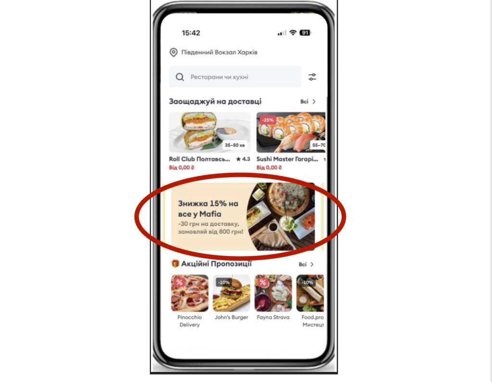

Bolt Food · Партнерський портал
У Партнерському порталі Bolt Food ви самі керуєте видимістю, знижками та участю в кампаніях платформи. Одні інструменти допомагають частіше зʼявлятися в стрічці і пошуку. Інші — дають гостю привід замовити саме у вас. Найкращий результат зазвичай дає комбінація: спочатку вас бачать, потім — купують.
У розділі «Промоакції» є два блоки. Зверху — Розумні акції: готові пакети зі знижкою для різних груп гостей, де Bolt Food ділить витрати з вами. Нижче — «Налаштувати інші акції»: платне просування в застосунку, звичайні знижки та підключення до івентів платформи.
Натисніть на інструмент, щоб розгорнути деталі.
Розумні акції самі визначають, кому показати пропозицію. Ви обираєте пакети в порталі — система показує знижку лише тим гостям, для яких вона розрахована. Так заклад залучає нових клієнтів і повертає тих, хто давно не замовляв, без «знижки на всіх».
Цей інструмент можна тримати увімкненим на постійній основі — і саме так він працює найкраще:
| Група гостей у порталі | Хто це | Навіщо підключати |
|---|---|---|
| Нові гості | Люди, які роблять перші замовлення на Bolt Food | Стати першим вибором і виростити постійного клієнта |
| Гості, які давно не замовляли | Користувачі без нещодавніх замовлень | Повернути аудиторію сильнішою пропозицією |
| Нерегулярні / залучені гості | Замовляють час від часу | Підняти частоту і привчити замовляти частіше |
| Постійні гості | Ті, хто вже добре знає застосунок і замовляє регулярно | Утримати й виділитися серед конкурентів |
| Найактивніші гості | Найвища частота та чек у застосунку | Закріпити лояльність серед найціннішої аудиторії |
У кабінеті для кожної групи видно глибину знижки (часто на меню, інколи з безкоштовною доставкою) і частку, яку бере на себе Bolt Food. Підключайте пакети окремо: можна почати з нових гостей і тих, хто давно не замовляв, а далі додати постійну аудиторію.
Платне просування (спонсоровані оголошення) піднімає картку закладу вище, щоб більше гостей її побачили. Це не знижка: гість замовляє за звичайними цінами меню. Ви обираєте локації, бачите денну вартість у порталі й у будь-який момент можете зупинити кампанію.
Звичайні акції дають протестувати знижку без пакетів Розумних акцій: на все меню або на вибрані хіти. Гість бачить перекреслену ціну й бейдж на картці закладу — це часто збільшує кількість переходів у меню. Такі акції фінансуються повністю закладом.

Час від часу в порталі зʼявляються кампанії платформи: тематичні тижні кухні, святкові акції, тиждень Bolt Plus тощо. Якщо заклад підходить за умовами, ви бачите запрошення й можете приєднатися самостійно.
Почніть з платного просування, щоб картку частіше бачили в зоні доставки.
Додайте знижку на хіти або Розумні акції для нових і «сплячих» гостей.
Тримайте Розумні акції на постійній основі й підключайтеся до івентів тижня.
Адреса: foodpartner.bolt.eu. Якщо пароль загублено — відновлення через «Forgot password». Логін — email, з яким заклад зареєстрований на Bolt Food.
Якщо до акаунта привʼязано кілька закладів, перемикач локацій — зліва вгорі. Акція завжди застосовується до вибраного закладу.
Спочатку перегляньте блок Розумних акцій і увімкніть потрібні групи гостей. Далі — «Налаштувати інші акції»: платне просування, звичайні знижки, івенти.
Акція працює лише коли заклад онлайн, меню опубліковане, фото й ціни актуальні. Інакше гість або не побачить пропозицію, або не оформить замовлення.
На головній сторінці, в розділі Статистика і в «Промоакціях» видно витрати на акції, замовлення та ефективність. Якщо цифри не зʼявляються кілька годин після запуску — будь ласка, зачекайте певний час доки оновляться, зазвичай це займає до тижня часу.